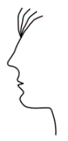
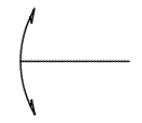
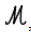

Беседа 3333 от 3877 · Беинса Дуно
Малки правила
„Отче наш“
„Махар Бену Аба“
Имате ли тема? („Имаме.“ Прочете се темата „Защо плачат децата“.)
Има ли някой автор да е писал върху плача? Някое съчинение има ли? Вие от вашето детство не помните защо сте плакали като малки деца. Плачът е свързан с дихателната система. Той внася известна мекота. Плачът може да го сравним с дъжда, който пада на почвата. Когато човек стане много сух, трябва да поплаче малко, да се овлажни, понеже дъждът е свързан с въздуха, а въздухът е свързан с дробовете.
Сега плачът има степени. Категории на плача има. Има един креслив плач, има по-тих плач. Запример детето, когато се отдалечава майка му от него, плаче по един начин; когато не получава някое благо, плаче по друг начин; когато го накажат, плаче по трети начин. Плачът изобщо е смяна на енергия, по-лесно става смяната на енергията в човешкото тяло. Когато човек е тъжен, скърбен, че не плаче, мъчно се сменя енергията. Щом си поплаче, веднага се сменят енергиите, утихне, просветне му.
Кое е противоположното на плача на човека? Смехът, нали? Ако човек е скърбен, ако се засмее, минава му скръбта. Чрез смях лекуват болните. Американците имат тази система. Един американски лекар лекувал чрез смях. Болният казва: „Боли ме коремът.“ Лекарят се смее: „Кис-кис.“ Казва: „Смееш се, но тази е сериозна работа.“ Той пак се смее. Като се смее десет–двайсет минути, и болният започне да се смее. Лекарят и болният започват да се смеят заедно. Болният забравя болестта си. Болката не е нищо друго, освен събрана енергия някъде в някой орган. Има по-голямо налягане и вследствие на това не може да издържи, явява се болката. Туй налягане трябва да се отмахне.
За другия път пишете „Смехът“. Направете един контраст между смеха и плача. С какво може да замените смеха и плача? Смееш се. С какво можеш да замениш плача? От какво произтича плачът? Смехът произтича от много голям контраст. Представете си, че човек е облякъл палтото си наопаки и мисли, че е налице. Всички, които го видят, се смеят.
Минават двама господа, започват да се смеят. Причината за смеха е един петел. На тротоара турена царевица, петелът рови и кълве царевицата. Няма какво да рови там. Той мисли, че е извадил. От почвата може да извади, но без причина рови. Мисли, че от камъните е извадил. Мисли, че е много учен. Като разрови с краката, мисли, че е извадил царевицата. Другите се смеят, понеже мисли, че от камъните изровил царевицата. Не знае, че те му я дали. Сега човек, като е на някой камък, и той рови по същия начин и мисли, че той е открил нещо. Той мяза на един петел. Или запример имате едно преждевременно заключение. Времето се развалило, вие сте малко суеверен и мислите, че щом се развали времето, щом се заоблачи, мислите, че вашите работи няма да вървят. Разбира се, ако отиваш на хорото да играеш и се заоблачи – ще вали дъжд, ще развали хорото, неприятност има. С хубави дрехи си, ще се окаляш. Отиваш на нивата, времето е сухо – ако вали дъжд, заоблачаването е на място.
Сега всичките хора разсъждават статически. Ако челото на един човек е голямо, какво показва? Защо ни е високото чело? Или носът е дълъг. Много неприятности в живота произтичат, че челото не е устроено, не може да разсъждава човек философски от причини към следствия. Причината е в челото. Или пък носът е къс. Природният ум не е развит в тебе, нямаш усет за нещата. Защото нали в носа е уханието. Уханието предпазва. Хубавите ухания имат едно предназначение, лошите имат друго. Някои противоречия произтичат от усета. Някои неприятности произтичат от ушите на човека. Представете си, че на някой човек слухът не е развит, не е нормален, заглъхване има на ушите. Върви някъде, върви кола отзад, наближава, блъсне го. Ако беше слухът развит, щеше да чуе веднага. Та казвам, трябва да се свърже слушането с човешката разсъдливост. Ако линията на челото се съкрати, какъв ще бъде човек?
Човек има три капитала вложени. Умът представя единия капитал, носът представя другия капитал и усетът представя третия капитал. Усетът е свързан с физическия свят. Носът е свързан с дробовете. Челото горе е свързано с мозъка. Ако мозъкът не функционира правилно, няма достатъчно енергия, която да изпрати в нервната система, дишането не функционира правилно. Щом дишането не функционира правилно, тогава и храносмилането е в зависимост от дишането на човека.
Та първото нещо се изисква сега – човек да разбира. Челото – предната част е свързана с човешката мисъл. Трябва да има нормална мисъл. Носът е свързан с чувствата. Усетът е свързан с устата. Като дойде до усета, какво прави устата? Казвате, че човек много сладко говори. Много сладко говори, но щом влезеш в нея, като те вземе между зъбите си, ще те сдъвче. Като влезеш в устата, не може да очакваш от нея снизходителност. Тя ще ти съблече горната дреха, долните дрехи ще ти съблече, ще те вкара в една стая, ще те запознае с народното събрание на човека.
Казвам, три неща трябва да държите в ума си. Трябва да обръщате внимание на умствения си капитал, да го не харчите напразно, и върху капитала на вашето сърце, което е израз на човешкия нос, и после върху вашия усет, на физическия капитал, който е в обръщение. Физическият капитал приход дава, умът е вложеният капитал, носът е капиталът в обръщение. А усетът е капитал, който дава приход, ядеш, придобиваш. Вие имате усет и не знаете защо ви е усетът. Той е да придобиете нещо. Чрез устата лесно придобивате. Щом искате да опитате чувствата си, чрез носа ще ги опитате, чрез уханието. Щом искате да опитате ума, чрез вашето чело ще го опитате. Възприятията, които се приемат чрез челото, са едни; които се приемат чрез носа, са други. Възприятия има, които се различават по степени. Именно трябва да се хармонизират тия възприятия. Чрез челото мислещият действа, чрез носа неговите чувства се проявяват, чрез устата – неговата активност.
Запример вие искате да учите. Искате да знаете дали ще може да учиш, или не. Най-първо ще попиташ ума си може ли да учиш, той ще ти каже. След туй да попиташ носа си и устата си, че седнеш на едно хубаво ядене. Ако може да ядеш с приятност, с търпение, ще свършиш училище. Ако нямаш търпение да ядеш правилно, и учението ще бъде същото. В своите похвати, в своите навици не трябва да бързаш. Не трябва да бързате в яденето. Няма какво да се бърза. Като бързаш при яденето, няма да сдъвчеш храната. Работата, която трябва да свършат зъбите, се дава на стомаха и няма да се мине дълго време, ще се разстрои стомахът. Щом се разстрои, твоят мозък ще се повлияе, ще започне паметта да се разколебава и ще получиш песимистично настроение. Като седиш, ще благодариш, че си ял хубаво. Най-първо, като донесат яденето, разгледай яденето с ума си. Помисли малко колко красиво е яденето. След туй с носа си ще помиришеш малко, да видиш какво е уханието. Най-после с устата си вече ще опиташ туй, което с очите си видял. Очите са външната страна на ума, която проверява нещата чрез носа, чрез уханието. Той ще предаде, устата ще си даде мнението.
Та казвам, когато няма хармония между човешкия ум, между човешките чувства и между устата и храносмилането, човек не може да върши работата си добре. Значи умът е свързан с електричеството, с магнетизма, със светлината. Вие някой път казвате: „Топло е времето“ или „Студено е времето“. Вие си влияете. Казвате: „Светлината е много ярка.“ Трябва да се научите да мислите хубаво. Уханието на вашия нос ще ви свърже с онези впечатления, които природата произвежда във вашите чувства.
Да кажем, [понижи] се температурата или повишава се температурата. Вие трябва да знаете защо се повишава, защо се понижава температурата. Ако се понижи температурата, какво лошо има? Понижението на температурата е на едно място, температурата се повишава на друго място – плюс и минус. Когато имаме плюс, имаме минус в противоположния полюс. Да кажем, ако има минус на южния полюс, ще имаме плюс на северния полюс. Имаме плюс на южния – същият закон. Какво представя скръбта сама по себе си? Как бихте разрешили скръбта? Топлината на скръбта и топлината на радостта къде се намират? Вие не сте правили наблюдение, когато скърбите, каква е температурата. И когато сте радостни, не сте правили наблюдение. Вземете един термометър. Някой път, когато сте много радостни, турете термометъра под мишницата и вижте каква е температурата. Когато сте много скръбни, пак премерете температурата. Това са много интересни наблюдения. Ако човек е много скърбен, неговата скръб се отразява. Ако е радостен, се отразява добре върху растението. Ако си радостен, пипнеш някое растение, разхубавява се. Ако си скърбен, като пипнеш, повяхва. Понеже скръбта съдържа доста активна есенция, трябва да се размива, да се разредява. Щом дойде скръбта, трябва да я разредите, тя е сгъстена. По-малка доза ще вземате. Едно кило захарин се равнява на седемстотин кила захар. Значи един грам захарин на колко ще бъде равен?
При новото възпитание човек всякога търси хора, които са в хармония. Има един вътрешен начин. Човек трябва да влиза в хармония с хора, противоположни на себе си. Някой път религиозните хора се плашат от себе си. То е едно заблуждение. Те, като се отделят от света, стават своеобразни, създават си мнение, че са свети и започват да съхнат. Светските хора, като станат светски, затлъстяват. Едните съхнат, другите затлъстяват. Светските хора страдат от застояла вода. Религиозните хора, които не разбират живота, страдат от голяма суша. Светските хора и религиозните хора, да ги събереш на едно място. Религиозният човек да даде от топлината, от сушата на светския човек. Той ще даде на религиозния от своята влага. Хубаво е човек и в света да ходи. Има един свят, аз го наричам свят на жабите, дето има жабурняк. Светският живот има външна страна, има ред и порядък. Някои вземат светския живот в яденето и пиенето. То е само външната страна. Светските хора са, които вярват, че всичките блага са на земята. Другите вярват, че всичкото благо е в човешкия ум. То е цяла анархия. И трите свята съставят един свят. Да ви приведа онзи пример. В Америка има едно религиозно общество, което лекува с внушение. Те казват, че болестите не съществуват. Че си болен, ти се заблуждаваш. Счупиш си крака, той ще те убеди, че кракът ти е здрав. Ти си мислиш, че е счупен. Ще мислиш, че кракът ти е здрав и ще оздравее. Някой си ходил на разходка и като бягал, счупил си крака. Един от тези лекари го лекувал, наместил крака, оздравял му. Казва: „Кракът ти не е счупен.“ Като оздравял кракът, лекарят иска да му плати. Той казва: „Представи си, че имаш десет хиляди долара, въобрази си, че ги имаш.“
Та има неща верни. Някой път ние преувеличаваме работите. Счупен е кракът ти, счупен е. Ако този крак се намести, тогава е хубаво. Някой казва: „Аз бял ден не съм видял.“ Толкоз хубави дни са минали, все бели дни, той не видял бял ден. То е вътрешно субективно схващане. Казвам, при новото възпитание, като влезеш в живота, вие трябва да бъдете екипирани. Представете си, че вие отивате на северния полюс. Може ли да идете с тия тънки дрехи, както сте облечени тук? Казвате: „Господ там ще ни помогне.“ Как ще ви помогне там Господ? Ще ви помогне, ако имате дебели дрехи. Допуснете, че вие сте музикант, хората са добре разположени спрямо вас. Вие искате да дадете един концерт. Ако вие не сте подготвени и дадете един концерт, втори път тия хора няма да дойдат. Ако пак направите същото, пак няма да дойдат. Хората не искат да гледат колко сте красив. Те искат от вас музика. Ако свирите хубаво, ще имате придобивка. Отивате да работите някъде. Хората изискват не сладък говор, но работа. Вие много сладко говорите целия ден, но не работите. Много сладко говориш, но ако и тъй сладко може да работиш, тогава ще бъдат доволни. После казвате: „Аз ще уча.“ Казваш, че ще учиш, но не учиш. Казваш: „Аз тази година ще свърша училище.“ Ще свърши, но не започва. Все чака, казва: „Нямам разположение. Малко не съм разположен днес.“ Цяла година – все неразположен. Представете си сега, че вашето неразположение произтича от въшка, въшка влязла в ризата. Вие речете да учите и двеста бълхи и въшки по гърба ви хапят. Какво трябва да правите? Вие започвате да философствате защо Господ създал тия въшки и бълхи. Не е разрешение. Бълхите и въшките са създадени за ленивите хора. Предипотопните животни бяха при благоприятни условия. Щом се наядат, проснат се, спят. Легнат да спят – не работят. Затуй Господ изпрати паразитите да ги хапят, да не се атрофират мускулите. Туй е правдоподобно. Понеже хората са научени, тези паразити изпълниха своята рол. Сега, като дойдат, ще им кажем: „Ние ви благодарим за услугата, която ни направихте едно време.“ Тогава вземете тия въшки и ги впрегнете на работа.
Един американец събрал няколко хиляди бълхи, изкарва си прехраната с тях човекът. Той ги възпитал, образувал си полкове от тях, научил ги да дефилират като войници. Казвам, ако един човек може да научи бълхите да дефилират като войници, защо човек да не може да възпита своята мисъл, желания и постъпки? Този човек казвал, че най-мъчното било да отучи бълхите да скачат. Щом се отучат да скачат, вече може да ги научиш на друго по-лесно. Един американец казва: „Ходих да гледам как дефилират бълхите.“ Другият му казва: „Не се подигравай.“ „Ходих“, казва.


За бъдеще, когато искате да развиете една дарба, един талант, вие трябва да разбирате този закон. Човек за да бъде талантлив, то не става така лесно. Искате да изявите музиката, трябва да има някой да ви стимулира. Откъде ще вземете музиката? Трябва да я почерпите отнякъде. Откъде ще почерпим огъня? От слънцето. Светлината ще вземем от слънцето. Изворът на всичката топлина и светлина е слънцето. Казвам, за бъдеще трябва да виждаме вечната хармония, която съществува в цялото битие, да бъдем в съгласие с нея. Имаш една глава, да се радваш на главата, да я разработваш. Човек всяка сутрин влиза в главата да я разработва малко. Някои в главата са работили повече при ушите и са сприхави. Някои са работили повече над ушите и обичат да пипат. Някои са работили отстрани на главата и са станали инженери, техници. Някои са работили по-долу, при ушите, обичат да си угаждат, да ядат и пият.
Та казвам, човек навсякъде трябва да работи в главата си. После трябва да работи и в сърцето си. Вие запример, когато се разсърдите, какво правите, когато кипнете? Какъв метод употребявате, за да си въздействате? Когато едно ястие кипне на огъня, какво трябва да прави онази жена? Отслабва огъня или изважда тенджерата навън. Човек, щом кипне, трябва да знае да отслаби огъня или да извади тенджерата. Представете си, че ви дадат такъв един пример: едного от вас да го прекарат през хора, които обичат да се шегуват. Да ви прекарат през сто души от единия до другия край. Да ви се смеят, без вие да изгубите равновесието. Хайде да не са сто, десет души да са. Да минете, те да ви се смеят и като излезете, да имате същото разположение, както когато сте влезли. Като сте влезли, вие сте имали хубаво разположение. Като излезете навън, вече като че целият свят се е изменил. Че туй често се случва. Тръгваш на екскурзия добре облечен, весел си. Ударил някакъв дъжд, изкалял си се, казваш: „Що ми трябваше?“ Не че е лошо, но ако е зимно време. Ако е лятно време, когато е топло, е по-леко.
Какво трябва да се прави, за да се продължи носът? Да допуснем, че вие сте студент в университета. Не ви върви. Какво средство бихте употребили, за да ви тръгне? Най-първо, половин час ще седнете, ще мислите, разправяте всичко. Ще си турите шест. Разправяте на професора, но виждате, че той не туря шест, но ви турил три. Вие сте разсъждавали половин час, но той ви турил три. Втория ден вие пак [разсъждавате] половин час и той ви тури три и половина. После ви тури четири, пет, шест.
Най-първо, човек трябва да добие една самоувереност. Един математик, доста умен човек, искал да скъса един способен ученик. Ученикът казва на професора: „Имате грешка.“ Като провери, ученикът е прав, професорът сбъркал. Някъде, като измени знака, процесът е обратен. Знаците на умножението, делението, изваждането, събирането ако измениш, трябва да се връщаш назад да търсиш резултатите, които са произлезли. Казвате: „Аз съм един неспособен човек.“ Вие сте чудни по някой път, казвате: „Аз съм неспособен човек.“ Какво значи неспособен? Един човек, който е богат, не е орал нивите, не е сял, неспособен човек ли е? Какво се изисква от него, да стане способен? Да изоре нивите си, нищо повече. Не разбираме, че той няма ниви. Ако няма ниви – не може да оре, но той вече има ниви, сто декара хубава земя има. Казва: „Аз съм неспособен.“ Не е изорал нивите си, неспособен е. Способни сме, изорали сме нивите си. Неспособни – разбираме недовършена работа, която трябва да се извърши.
Та трябва да се работи, много трябва да се работи в живота, и разумно да се работи. Щом кажеш една отрицателна мисъл, поправи я. Минава някой човек, веднага ще си дадеш мнението. Казваш: „Той е неспособен човек.“ Провери онова, което казваш, право ли е, или не. Ако не е право, коригирай мисълта си, защото всичко туй зле се отразява върху самия тебе. Ако този човек е неспособен, ще му кажеш тъй: „Ти си неспособен, но не учиш. Впрегни се, за нищо не те бива.“ Така не се говори. „Бива те за много работи, но си мързелив. Никога не ставаш навреме.“ Ако човек на младини не учи, на сто и двайсет години като стане ли ще учи? На сто и двайсет години той трябва да яде от готовото. В младини трябва да придобива. В млади години ще придобивате. Ако в млади години той не е работил, какво ще яде на старини? Това са ред разсъждения сега.
Много погрешки има в миналото направени. Не е лесна работа да се изправят. Има работи, пропуснати в битието на човека от хиляди години. Но всичко може да се поправи по един разумен начин. В един ден не може и в една година не може. Като измени човек своя ум, може да поправи. Като измени посоката на сърцето, може да поправи. Като измени волята си, може да поправи. Насоката трябва да се измени. Казвам, всички трябва да разбирате закона. Ако сте един машинист, трябва ли да туряте спирачка, когато се качвате нагоре? Тия спирачки са потребни, когато слизате надолу. Щом вървим нагоре, никаква спирачка не трябва. Спирачките са за надолу, не за нагоре.
Та вие все противодействате. Вие казвате: „Аз не съм способен човек. Условията са лоши, светът е лош.“ Може би светът е лош, има нещо лошо. В какво седи лошевината на света? Светските хора са много практични. Щом влезеш. той казва: „Извади си кесията. Имаш ли нещо?“ Той иска да ти види кесията. Щом му покажеш, че кесията е пълна, готов е всичко да ти показва. Щом кесията ти е празна, казва: „За такъв мющерия нищо нямам.“ Вие отивате в природата със своите празни кесии. Имате желание да влезете в едно заведение, искате те да ви покажат. Казват: „Я да видим кесията.“ Имаш желание да учиш. Като видят празната кесия, казват: „Такива ученици не искаме.“
Запример, ако аз искам да изучавам музика, ако искам по-енергична музика, ще ям череши. Ако искам по-духовна музика, ще ям сливи. Ако искам да бъда индивидуален – дюли. Ще употребявам лимони. Ако искам да индивидуализирам музиката, ще ям портокали. Не е лесна работа човек да бъде музикант. Запример вие никога не сте правили опити дали сте добри певци, или не. Вие, когато пеете, идете при славеите. Ако славеите се конкурират с вас, значи пеете хубаво. Ако славеят не се обажда, значи не пеете. Щом славеят пее – започва състезанието, ти си от добрите певци. Щом славеят не пее – не си добър певец. Идете да се учите някой път от техните трели. Славеите колоратурно пеят, но такт нямат.
Сега да кажем, вие искате да се учите. Как трябва да кажете: „Искам да уча“? То не е музикално, така не се говори. Музикално как бихте казали: „Искам да се уча“? Някой от вас, който е музикален, как ще изпее „искам да се уча, ще уча и мога да уча“? Те са различни. Стомахът се занимава с минорната гама, умът се занимава с мажорната гама, а пък сърцето с хроматическата гама. Минорната е стомашна. Всичко разумно в света е музикално. Всичко в света, което не е разумно, не е музикално. Под думата разумен свят разбираме музикален свят. Под неразумен свят разбираме немузикален свят. Отношение има.
В каквато и да е работа, настоявайте. Може да направите десет–петнайсет опита дотогава, докато преодолеете. Онези, които обичат музиката, като пеете и като гледате червения цвят, да се даде активност на музиката. Портокаленият цвят дава индивидуалност, зеленият цвят – растеж да има в музиката. Жълтият цвят ще даде красота, израз. Човек се занимава с много малки работи. По-голямата част от живота е механична. Човек работи, но си губи времето. Цял ден с чука удряш, ковеш, ковеш. Ръката ти става силна, но какво придобива човек? Или цял ден пишеш. Не е организиран животът още. Пишеш, не знаеш кое трябва да пишеш и какво пишеш. Някой път вие се обличате и усещате, че нещо ви липсва. Не знаете какво ви липсва. Някой път сте доволни от дрехата, някой път не сте доволни.
Казвам, да се създаде един живот: като се облечете, да ви е приятно, като работите, да ви е приятно от работата. Пиши, само да знаеш колко да пишеш. Или, като седнеш да ядеш, да знаеш колко време да ядеш. Добре, ако един човек и един слон се свържат да работят заедно, как ще си определят времето? За слона седемдесет кила ориз на ден трябва, а на човека колко му трябва? Четвърт кило е достатъчно – не може да бъдат съдружници. Та казвам, несъобразностите в нашия живот седят в това, че някои в чувствата мязат на слона. Те са лакоми. Седемдесет кила ориз му трябват, да си задоволи сърцето. Другиму трябва четвърт кило. Какво сдружение ще направите? В умствено отношение той иска да разреши всичките въпроси. То е слонова работа. Като разреши всичко, какво ще прави следния момент? Да разреши всичко значи в даден случай работата, която ти дават, да я разрешиш, че всичките неща, които работата изисква, да ти бъдат ясни. Следния момент друга работа ще имаш. Защото ние влизаме в един свят, дето съзнанието работи. Ти дойдеш в съзнанието на професора, но там има да се занимаваш със [съ]знанието на професора: съзнанието [му] седи по-високо от съзнанието на ученика. Над тия професори има друго съзнание. Има степени на съзнанието.
Някои от вас говорят за окултна наука. Един ученик не може да научи окултната наука, който не знае какво отношение има между ума и сърцето, и тялото. Един ученик не може да бъде окултен ученик, ако не знае да се справи с една малка мъчнотия. Не може да бъде окултен ученик, ако не знае да се справи със сиромашията, […] ако не може да се справи с болестите. Болестите са задачи, с които трябва да се справи. Болестта като дойде, ще се справи. Сега има работи, с които няма какво да се справяме, те са уредени. Има работи, с които вие трябва да се справите.
Запример нямате обхода, не знаете как да се обхождате. Ще се научите да се обхождате. Да допуснем, че пишете на някой човек високопоставен. Вие сте много внимателен. Ще напишете писмото внимателно. Ако пишете на някой прост човек, небрежен сте. Ти ще пишеш тъй хубаво както на високопоставения, така и на простия. Няма да правиш разлика. Щом правиш разлика, ще направиш погрешка. Ти сам за себе си да пишеш. Като пишете, изядате букви. Не изядайте букви. Или започнеш първо големи букви, че после свършиш с малки. Характерът ти показва, че почваш грандиозно, свършваш микроскопически. Някой започва с микроскопически букви, свършва с големи. Няма да пишеш М-то така 
Аз някой път минавам и не искам да срещна никого. Отбивам се и вземам вдясно или вляво. Всякога вдясно не се отбивам – веднъж се отбивам вдясно, веднъж се отбивам вляво. Казвате: „Защо?“ Какво ще изгубите, ако се отбиете вляво, или какво ще спечелите, ако се отбиете вдясно? Ако се отбиете вдясно, вие трябва да дадете нещо. Ако се отбиете вляво, трябва да вземете нещо. Когато искам да взема, не минавам покрай онази кесия, която е празна, минавам покрай онзи, който е пълен, минавам покрай този човек, който ще даде нещо. Като видя някой беден човек, тогава не минавам отляво. Аз минавам отляво, за да взема нещо, когато минавам покрай богати, защото неговата кесия е пълна. Когато неговата кесия е празна, минавам отдясно, понеже моята е пълна, а неговата е празна. Както отварям кесията за един, така отварям кесията за друг. Трябва хармония в природата. Ще вземаш, ще даваш равномерно.
Та казвам, това са малки правила, но са свещени правила. Така животът добива смисъл. Защото природата обича правилното вземане и даване. Всякога, щом минеш покрай един умен човек, той ти дава, той не може да не ти даде. Ако минеш покрай музикант, и на един километър да минеш, той ще ти даде. Ако на десет километра минеш от един човек, пак ще ти даде. Ти, откъдето и да минеш, все ще даваш. Само че онова, което даваме и което вземаме, трябва да е в хармония. Вие минавате, и не знаете защо минавате отляво или отдясно. Сега, като минавате отляво, готови ли сте добре да вземете? Като минавате отдясно, готови ли сте добре да дадете? Като вземеш, и не си доволен от взетото, и като дадеш, да не си доволен от даденото – то не е хармонично вземане и даване. Да бъдеш доволен от онова, което вземаш, и да бъдеш доволен от онова, което даваш.
Махар Бену дава или взема? Фир-фюр-фен дава, слиза долу да почерпи нещо от кладенеца. Махар Бену ще те спре, ще ти поговори сладко, за да му дадеш нещо. Фир-фюр-фен е като буре.
Вземате „до“ и „сол“, вземате [„ми“] и „сол“. В кое има повече хармония? („Ми“ – „сол“.) „До“ – „ми“ е по-далече, „ми“ и „сол“ отива, затваря го в затвора. Ти му приказваш: „Да те пратим в училище да свириш.“ Казва: „Какво ще уча, в затвора ме пращаш?“ Останала надежда, като излезе из затвора, да иде да следва. „Ми“ е излязло из затвора, че си хармонират. Казва: „За мене е таман. Ще ида да следвам.“ Някой път вие вземате „до“. „До“ е статическо положение. Трябва да се превърне в динамика. Запример вие се намирате в лоши условия. То е статическото положение на „до“. Ще подобрите условията. Значи туряте яйцето под квачката, изтънява черупката. Като изтънее „до“-то, измени се. Като се измени, тогава с какво да се занимава? Запример, ако турите двайсет яйца под квачката и нито едно не се излюпи, нали е загуба. Ако всички се измътят, имате печалба. Някой път хората пеят тоновете и не може да се измътят.
Един руски виртуоз слушал друг виртуоз. Като се върнал, ударил цигулката си и я счупил, че не е така знаменит като другия. Наместо да се насърчи, счупва си цигулката. Ония, които се обезсърчават, като слушат други цигулари, те не са разбрали. Да допуснем, че някой път вие вземете „ми“ и дадете четири секунди. Друг път го вземете и дадете една секунда. Най-първо го държите четири секунди, после само една. Каква разлика има между една секунда и четири секунди на „ми“? Ако пуснете в кладенеца една връв и взема четири секунди да я извадите навън и ако спуснете, и взема само една секунда да [я] извадите, кога ще имате по-голяма придобивка? Сега в кой характер се придобива повече: тези, които продължават, или тези, които вземат бързо? Сега някои от нотите продължаваме повече, други вземаме по-бързо. В кое се придобива повече материал? Влизаме в една област, дето е разпокъсана, не може да има една връзка.
Всяко нещо трябва да има приспособление, практическо приложение. Трябва да имате една школа, да имате упражнения. Има упражнения за човешката памет, за разсъдъка, за музиката има упражнения. За да имаш музика, трябва да имаш постановка. За да накараш една машина да върви, най-първо ще напълниш котела с вода, после ще туриш огън, ще се качи машинистът, ще тури парата на работа. Няма да пресиляш, няма да отслабваш. Ако пресилиш, може да се пръсне котелът. Ако е слаб, движението ще бъде бавно. Ако усилиш, движението ще бъде бързо.
Във всички изкуства има едно пресилване. Гледам някой музикант взема някой акорд в горните позиции – двойни, тройни акорди взема. Защо взема тия акорди? В какво е мъчен тройният акорд. Запример, ако се вземе „до“ в първа степен – в първата позиция на цигулката или във втората, или в третата, или в четвъртата, или в шестата, каква е разликата? Първата позиция е най-важна. Тя е мярката, тя трябва да се заучи много добре.
Вземете „до“, „ми“, „сол“ и обратно. (Учителят пее: „До“, „ми“, „сол“. „Мирно, деца.“) Защо се смеете? (Пее: „Добре вземате, деца.“) Децата разбират кое може да вземат. Детето по-добре взема, като му дадеш. Старият обича да дава, младият обича да взема. (Пее: „Взимай, взимай. Давай, давай.“)
Кое е по-мощно, вземай или давай? Като вземаш, нагоре излизаш. В даването отгоре надолу слизаш. (Учителят пее: „Ли-ла-ле-ле.“) Какво състояние показва? Какви думи бихте турили? На тази мелодия може да се турят думите: „Чакай, чакай, да мога да те стигна.“
„Отче наш“
Тринадесета лекция на младежкия клас
17 януари 1941 г., петък, 5 ч. сутринта
София – Изгрев